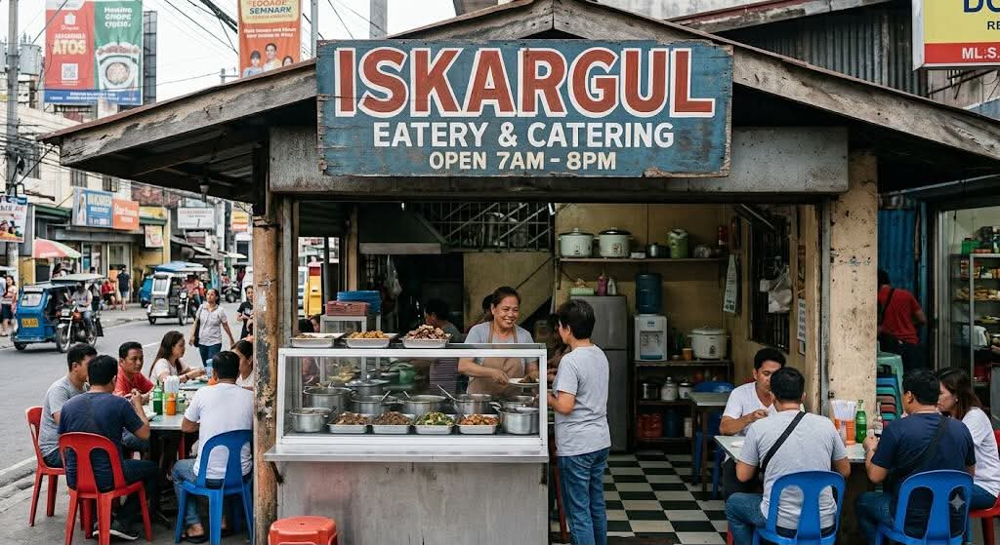
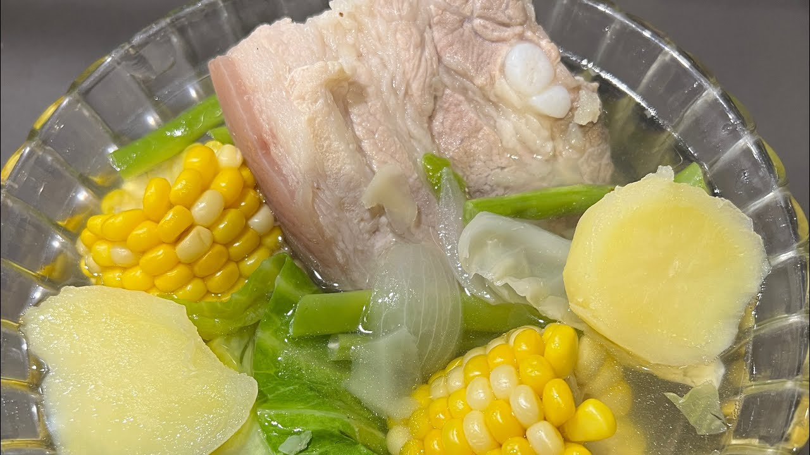
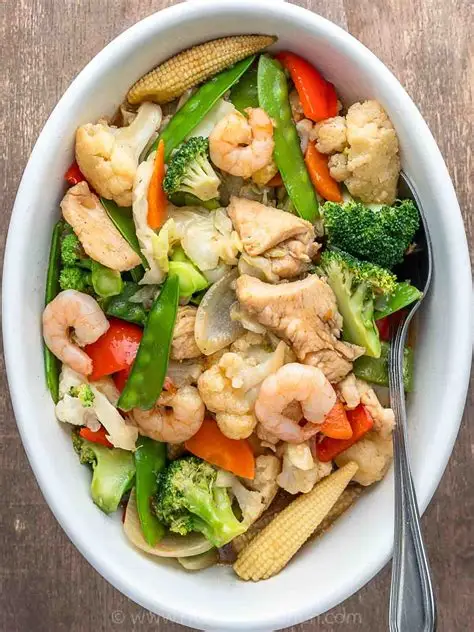

Isda
Price: ₱50 per serving
isang paboritong isda na sinalang sa mainit na mantika hanggang maging golden brown.

wala paring kanin buseng?
bata ni along

Price: ₱50 per serving
isang paboritong isda na sinalang sa mainit na mantika hanggang maging golden brown.
Price: ₱55 per serving
Isang putahe na may karne ng nilagang baboy na pinakuluan nang may sibuyas, paminta, asin at green onions. Ito ay nilagyan din ng sahog na patatas at repolyo.

Price: ₱60 per serving
Ito ay putahe na may pinagsama-sama na ibat ibang gulay. Karaniwang makikita sa putahe na ito ay ang repolyo, carrots, cauliflower, broccoli, sayote, green beans at baby corn.
